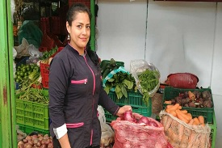
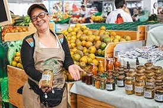

Martes 6
septiembre 2022
Frutas poco comunes
Nummero 1
Ivestigacion estudiantes gastronomia
Semilleros de investigacion
La exclusiva del día buscando nuevos sabores
Somos estudiantes buscando un nuevo aporte a la gastronomia , realizando una investigacion en diferentes plazas de la ciudad sobre frutas poco comunes , las cuales buscamos implementarlas en nuestras preparaciones dandoles un papel importante en cada plato , buscando de resalten sus sabores , propiedades , colores entre otros aspectos que nos puedan brindar . Una de las plazas las cuales hemos visitado para empezar a conocer nuevos productos fue la plaza de restrepo ubicada al sur de la ciudad de Bogota , donde encotramos : pepinos dulces , arandanos , granadas , ciruelas criollas , araza , gulupa entre otros . Buscamos enfocarnos en el tema de la frutas con fin crear una o diferentes preparaciones entre postres , bebidas,etc . A continuacion una breve descripcion de cada una de las fruta que encontramos como menos comunes : PEPINO DULCE : (pera melon ) es originario de sur america y pertence a la familia solanaceae , al igual que el tomate , la berenjena entre otros , esta fruta es deliciosa y refrescante tiene un sabor parecido al del pepino , pera y al melon . Es utilizado en ensaladas, batidos , como aderesos , en postres debido a su rico sabor y aporte nutricional.
Foto capturadas en la plaza del restrepo (Bogota) ,tomada por un grupo de estudiantes de gastronomia de la fundacion Universitaria San Mateo
Puesto de la plaza de restrepo tomada estudiantes de gatronomia Fundacion Universitaria San Mateo.
Buscando nuevos sabores
Crear nuevas experencia atravez de frutas poco comunes
CIDRA : es una especie vecina de los limoneros. Es una fruta de cresimiento lento , es una fruta poco jugosa pero su aroma de la cascara es excepcional , se utiliza principalmente en pateleria , confiteria o incluso con fines decorativos GULUPA : es una fruta exotica es redonda de color verde , amarillo, o morado dependiendo del grado de mgaduracion y su sabor es sutilmente acido aunque un poco mas dulce de la maracuya, aporta muchos beneficios a sus consumidores la cual se tiene diferentes uso : se utiliza para preparar jugos , ensaldas , postres , ademas de comerse como fruta , entre otros usos ARAZA : proveniente de la amazonia colombiana , se se encuetra en las seis provincias de nuetro pais , contiene
buena fuete de minerales como : magnesio , zinc , fosforo, sodio , hierro , entre otros . la pulpa amarilla es acida la cual es muy utilizada en bebida refrescante y productos lacteos exoticos . GRANADA : originas de Asia central , las grandas comunes se cultivaron por primera en Persia, las grandas se pueden cultivar desde climas templados hasta tropicales , se puede utiliza en jugos , comer sus granos es una experiencia unica , en postres , helados y pastel saldo de verduras. POMELO O TORONJA: es una fruta que se conose como toronja es delisisa en bebidad , ensaladas , en platos de pescados y claramente como postres. ARANDANOS : la mejor forma de aprovechar es fresco y regularmente , los arandanos se pueden difrutar en una gran variedad de maneras y en diferentes preparaciones , batidos, agregarlos tartas , pstres , bevidas entre otras. CIRUELA CALENTANA :
Encuestas
Conociendo mas
Entrevista 1
¿Nombre completo?
Yolanda mora
¿Como mantiene su buen humor durante una
jornada difícil?
Con actitud positiva en
toda la jornada
¿Que la motiva trabajar aquí?
Los hijos y los
nietos
¿Cuanto
tiempo llevas operando en este mercado?
50 años
¿Que valores fundamentales debe presentar un vendedor?
Presentación
respeto actitud buenos modales
Yolanda.
Conociendo mas
Entrevista 2
¿Nombre completo?
Liliana Enciso Gómez
¿Como mantiene su buen humor durante una jornada difícil?
Con positivismo y amabilidad
¿Que la motiva trabajar aquí?
Mi familia
¿Cuanto tiempo llevas operando en este mercado?
53 años
¿Que valores fundamentales debe presentar un vendedor?
Honestidad , responsabilidad,buen servicio
Liliana.
Conociendo mas
Entrevista 3
Nombre: Nancy Gómez
¿Como es el ambiente y jornada laboral?
-Ahorita todo está escaso y costoso, las personas llegan inconformes, ya va en cada
quien si deciden llevar o no
¿Qué es lo que la motiva a trabajar todos los
días?
Me daría pereza quedarme en la casa, ya llevó varios años acá, no sería de quedarme
en la casa viendo televisión, eso para mí no es vida, la costumbre de andar
trabajando siempre
¿Cuantos años llevas trabajando en la plaza?
25 años
¿Siempre con esta variedad de frutas?
En un tiempo trabaje con toda clase de fruta, pero de un tiempo para acá soy
exclusiva en unas
¿Esta fruta cual es?
La vadea, para hacer jugo
¿La vadea es dulce?
No es dulce ni ácida
¿Que valores fundamentales debe tener un vendedor?
Depende de como corran los precios, hoy en día no se pueden mantener los precios,
cada vez que uno comprá sube y sube, uno intenta mantener los precios, pero hay un
límite
¿Cual es el producto qué más vende?
Una naranja pequeña, tiene varias propiedades, se usa para la diabetes. La llevan
más por curiosidad pero el que la come vuelve y compra más, es como comerse un
dulce.
Nosotros ahorita estamos manejando el Araza y está escaso si, hay productos que
están escasos, el Araza es muy delicioso la estamos haciendo en postre, cheesecake,
batidos
las frutas hay que probarlas, por que el sabor el indescriptible
Hay mucha variedad de frutas, por ejemplo el mamei o El zapote costeño, son cosas
muy sabrosas pero ya casi no la hay, por que nosotros los colombianos no sabemos
valorar todo lo que nuestra tierrita, le hacemos el feo y cuando las cosas hacen
falta, por ejemplo la puma rosa, hace más de siete años que no sale en el campo ya
medios se ven
Si, son unos árboles grandísimos, pero eso ya no se ve y hay mucha fruta que tiende
a desaparecer por el cambio de clima y porque el gobierno no ayuda alcampesino,
porque al que más debería ayudar es al campesino, por que es un factor
importante.
En mi tierra ya están cortando el árbol de limón y naranja, porque no les ofrecen
nada, aquí la gente dice es que en el campo se pierde y piensan que las cosas no
cuestan, los fletes han subido mucho, a la gente le falta mucha cultura, los
campesinos no ganan nada.
Si el gobierno ayudará, el campesino le daría
motivación
trabajar, pero como no ayudan, endeudados, sin salud y dele todos los días desde que
amanece hasta que anochese, la gente piensa aquí en la ciudad que las cosas se dan
aquí en el pavimento es tanta falta de cultura de la gente, el tiempo está dañando
la fruta, la gente no compra nada manchado, necesitan pasar necesidad paraque
aprendan, pero con esta pandemia la gente no aprendió, los que nos jodimos en el
campo si sabemos valorar, pero la gente aquí, lastimosamente no hay cultura, entre
más estudia la gente menos cultura, menos respeto, ser honrado viene de casa.
Bueno, muchísimas gracias por su tiempo
Hay en lo que les pude colaborar, ¿Y que están estudiando?
Gastronomía
Ay,tan rico

Nancy.
Conociendo mas
Entrevista 4
¿Nombre completo?
Fabián Andrés cárdenas jota
¿Como mantiene su buen humor durante una jornada difícil?
Poniendo buen ánimo
¿Que la motiva trabajar aquí?
los hijos,los nietos ,y la esposa
¿Cuanto tiempo llevas operando en este mercado?
40años
¿Que valores fundamentales debe presentar un vendedor?
carisma Ética y buen humor
Fabian.
Conociendo mas
Entrevista 5
Hola buenas tardes, me regalaría tu nombre completo por favor
Natalia García Rojas
¿Como tú mantienes tu buen humor durante una jornada difícil en la plaza?
Retirandome de la zona de trabajo
¿Que te motiva a trabajar en la plaza?
mis gustos
¿Cuanto llevas trabajando en la plaza?
10 años
¿Qué valores fundamentales debe presentar un vendedor en una plaza?
Tolerancia, respeto y el buen servicio

Natalia.

Plaza de mercado restrepo.
Tabulcion y estadisticas

Como mantiene su humor.

Cuanto tiempo.

Como vender.

Motivo para trabajar.